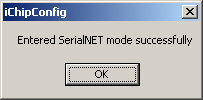

PIC - Wireless (april 2009)
Introduction
Goal is to read a number of sensors with a PIC and transmit the measured data through a wireless channel to a standard PC.
The required specifications are :
On modern laptops there are 2 standard wireless peripherals available: WiFi and bluetooth. Because Bluetooth has a simpler protocol stack, and is more inteded for peer-peer communication, Bluetooth is the first choice. The second choice is WiFi, and if that doesn't fulfill our requirements, ZigBee might be an alternative.
Conclusion
Bluetooth (with the standard builtin device) doesn't fulfill the range requirement.
Wifi, is terrible complex to set up, and gave a lot of BSOD's.
Zigbee is quit easy to install, has a good range, and runs on a simple virtual comm port.
Bluetooth
Everyone who used (simple) mobile phones ( and really checked the transfer speed as a function of distance ) knows that you have to put the mobile phone very close (with a meter) of the PC-Bluetooth antenna. That doesn't give much hope. So we tried to connect a high quality laptop with embedded Bluetooth with a desktop PC provided with Bluetooth USB stick (Sweex, not the best brand). We could achieve a distance of indoors / outdoors of 7 / 20 meter before we totally lost contact.
To increase the distance range, we probably need to use better USB-devices on both sides, that means we can't use the builtin device of the laptop.
Wifi
The IP address of devices that should communicate with each other should have the same base address, i.e. all bits that are set in the subnetmask must be equal. Normally all the bits in the first 3 numbers of the subnetmask are set (i.e the subnetmask = 255.255.255.0), in which case the following devices can communicate
192.168.2.7
192.168.2.3
but the following devices can NOT communicate with each other
192.168.1.7
192.168.2.3
To transport data, the simplest standard protocol seems to be Telnet.

Serial Port Wizard
Don't use port number 23 (TelNet) but you another innocent port number like 25 !!!!!
Enter SerialNET Mode doesn't work in this screen !!!
You can start the SerialNET mode through the mainmenu:

Here sometimes popups another window, on which you must click ok.
After closing this window, it takes 10 to 20 seconds before a connection is possible.
Exiting the SerialNET can only be done after the serial comm ports are disconnected, and then follows the next windows
Virtual Comm ports
You can find a lot of vritual comm ports on the internet, but most of them looks so terribly difficult that they can be ignored. Three of them seemed to be manageable, so we decided to test these three. During test, it's important to realize that the data is sometimes buffered (in quit large buffers, before it's transmitted). In our case specially the wifi-router had some unpredictable buffering.
Com2tcp + Com0Com
After a lot of trials we couldn't get this working.
Lantronix CPR
After a lot of trials we couldn't get this working.
HW VSP3
During installation you have to choose between standalone or client-server, we've chozen client-server (don't know why, but sounds the most logical and it appears to work finally). After installing and starting the program, only change the IP address to the IP address of the WIFI-device (and leave the Port number at 23 = TelNet).
Ad hoc connections
This should be the preferred way to setup a peer-to-peer connection. You need to set the following parameters and a lot more we can't remember, we couldn't reproduce it the second time, much too difficult !!